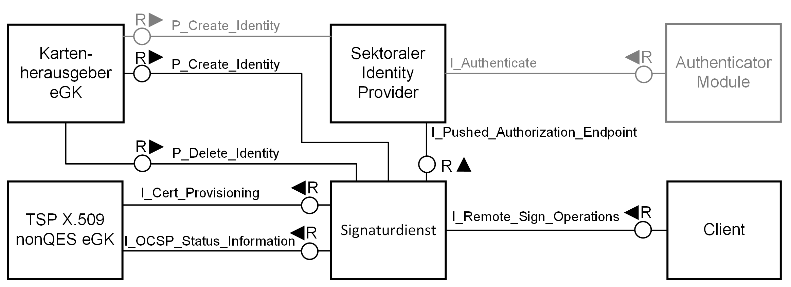

Elektronische Gesundheitskarte und Telematikinfrastruktur
Spezifikation
Signaturdienst
| Version | 1.5.0 |
| Revision | 567567 |
| Stand | 06.02.23 |
| Status | freigegeben |
| Klassifizierung | öffentlich |
| Referenzierung | gemSpec_SigD |
Änderungen zur Vorversion
Anpassungen des vorliegenden Dokumentes im Vergleich zur Vorversion können Sie der nachfolgenden Tabelle entnehmen.
Dokumentenhistorie
| Version | Stand | Kap./ Seite | Grund der Änderung, besondere Hinweise | Bearbeitung |
|---|---|---|---|---|
| 1.0.0 | 30.04.19 | freigegeben | gematik | |
| 1.1.0 | 28.06.19 | Einarbeitung Änderungsliste P19.1 | gematik | |
| 1.2.0 | 02.10.19 | Einarbeitung Änderungsliste P20.2 | gematik | |
| Einarbeitung Änderungsliste P21.1 | gematik | |||
| 1.3.0 | 02.03.20 | freigegeben | gematik | |
| 1.4.0 | 12.10.20 | Einarbeitung Scope-Themen zu R4.0.1 |
gematik | |
| 1.5.0 | 06.02.23 | Einarbeitung IDP_Maintenance_22.2 | gematik |
Die vorliegende Spezifikation definiert die Anforderungen an den Produkttyp Signaturdienst einschließlich der durch ihn bereitgestellten Schnittstellen.
Das Dokument richtet sich an Hersteller des Signaturdienstes und Anbieter von Signaturdiensten.
Dieses Dokument enthält normative Festlegungen zur Telematikinfrastruktur des deutschen Gesundheitswesens für den Online-Produktivbetrieb. Der Gültigkeitszeitraum der vorliegenden Version und deren Anwendung in Zulassungs- oder Abnahmeverfahren wird durch die gematik GmbH in gesonderten Dokumenten (z.B. Dokumentenlandkarte, Produkttypsteckbrief, Leistungsbeschreibung) festgelegt und bekannt gegeben.
Wichtiger Schutzrechts-/Patentrechtshinweis
Die nachfolgende Spezifikation ist von der gematik allein unter technischen Gesichtspunkten erstellt worden. Im Einzelfall kann nicht ausgeschlossen werden, dass die Implementierung der Spezifikation in technische Schutzrechte Dritter eingreift. Es ist allein Sache des Anbieters oder Herstellers, durch geeignete Maßnahmen dafür Sorge zu tragen, dass von ihm aufgrund der Spezifikation angebotene Produkte und/oder Leistungen nicht gegen Schutzrechte Dritter verstoßen und sich ggf. die erforderlichen Erlaubnisse/Lizenzen von den betroffenen Schutzrechtsinhabern einzuholen. Die gematik GmbH übernimmt insofern keinerlei Gewährleistungen.
Spezifiziert werden in diesem Dokument die vom Signaturdienst bereitgestellten (angebotenen) Schnittstellen. Benutzte Schnittstellen werden in der Spezifikation desjenigen Produkttypen beschrieben, der diese Schnittstelle bereitstellt. Auf die entsprechenden Dokumente wird referenziert (siehe auch Anhang, Kap. ).
Die vollständige Anforderungslage für den Produkttyp ergibt sich aus weiteren Konzept- und Spezifikationsdokumenten. Diese sind in dem Produkttypsteckbrief des Signaturdienstes verzeichnet.
Nicht Bestandteil des vorliegenden Dokumentes sind die Festlegungen zum Themenbereich Betrieb. Die betrieblichen Anforderungen sind im Anbietertypsteckbrief zum TSP X.509 nonQES eGK mit Option Signaturdienst verzeichnet.
Anforderungen als Ausdruck normativer Festlegungen werden durch eine eindeutige ID sowie die dem RFC 2119 [RFC2119] entsprechenden, in Großbuchstaben geschriebenen deutschen Schlüsselworte MUSS, DARF NICHT, SOLL, SOLL NICHT, KANN gekennzeichnet.
Sie werden im Dokument wie folgt dargestellt:
<AFO-ID> - <Titel der Afo>
Text / Beschreibung
[<=]
Dabei umfasst die Anforderung sämtliche zwischen Afo-ID und der Textmarke [<=] angeführten Inhalte.
Der Signaturdienst erzeugt elektronische Identifizierungsmittel für Versicherte in der Umgebung des Anbieters des Signaturdienstes. Ein elektronisches Identifizierungsmittel ist gemäß Verordnung (EU) Nr. 910/2014 [eIDAS] eine materielle und/oder immaterielle Einheit, die Personenidentifizierungsdaten enthält und zur Authentifizierung bei Online-Diensten verwendet wird. Die vom Signaturdienst ausgestellten elektronischen Identifizierungsmittel sind kryptographische Identitäten basierend auf asymmetrischer Kryptographie und Teil des Vertrauensraums für X.509 nonQES-Identitäten der Telematikinfrastruktur. Die vom Signaturdienst erstellten elektronischen Identifizierungsmittel (Zertifikate) nutzen Versicherte zur Authentisierung an den Diensten der elektronischen Patientenakte.
Versicherte können elektronische Signaturen, mittels Authentisierung durch einen sektoralen Identity Provider, in der vom Anbieter des Signaturdienstes geführten Umgebung erstellen lassen. Die elektronischen Signaturen des Signaturdienstes sind eine Alternative zur elektronischen Signatur mittels der Identität ID.CH.AUT der eGK.
Der Signaturdienst erstellt elektronische Identifizierungsmittel für Versicherte ausschließlich über korrespondierende Identitäten bzw. Personenidentifizierungsdaten eines sektoralen Identity Provider gemäß [gemSpec_IDP_Sek] im Auftrag des Kartenherausgebers der eGK des Versicherten. Personenidentifizierungsdaten sind ein Datensatz, der es ermöglicht, die Identität des Versicherten mitsamt der Herkunft der erhobenen Daten abzubilden. Die von einem sektoralen Identity Provider bereitgestellten Personenidentifizierungsdaten entsprechen den Personenidentifizierungsdaten im Zertifikat C.CH.AUT der eGK des Versicherten. Das Zertifikatsprofil C.CH.AUT_ALT für die vom Signaturdienst ausgestellten elektronischen Identifizierungsmittel ist in [gemSpec_PKI] festgelegt.
Im Kontext des Signaturdienstes treten folgende Akteure auf:
Anbieter des Signaturdienstes:
Anbieter eines Signaturdienstes setzen die in dieser Spezifikation beschriebenen Aufgaben des Signaturdienstes um.
Kartenherausgeber eGK
Kartenherausgeber der eGK beauftragen den Anbieter eines Signaturdienstes, um für ihre Versicherten auf deren Wunsch hin elektronische Identifizierungsmittel ausstellen zu lassen, die alternativ zur Identität ID.CH.AUT der eGK genutzt werden können. Falls sich ein Versicherter gegenüber dem Kartenherausgeber seiner eGK für ein elektronisches Identifizierungsmittel entscheidet, beauftragt der Kartenherausgeber eGK für diesen Versicherten beim Anbieter des Signaturdienstes das elektronische Identifizierungsmittel. Der Kartenherausgeber eGK übermittelt hierzu die für das elektronische Identifizierungsmittel notwendigen Personenidentifikationsdaten des Versicherten (u.a. Name, KVNR) an den Anbieter des Signaturdienstes.
Der Kartenherausgeber eGK veranlasst die Sperrung von elektronischen Identifizierungsmitteln bzgl. seiner Versicherten beim TSP X.509 nonQES eGK, der das Zertifikat für das elektronische Identifizierungsmittel erstellt hat.
Versicherte
Versicherte nutzen mittels eigener Client-Systeme den Signaturdienst, um mittels der elektronischen Identifizierungsmittel anderen Diensten ihre Identität zu bestätigen.
Versicherte richten sich an den Kartenherausgeber ihrer eGK, falls sie ihr elektronisches Identifizierungsmittel sperren lassen möchten.
Sektoraler Identity Provider
Ein sektoraler Identity Provider einer autoritativen Stelle (z. B. eine Krankenversicherung) gibt für ihre Versicherten eine digitale Identität aus. Diese Versicherten-ID wird über Standards der OpenID Foundation Anwendungen der TI zur Verfügung gestellt. Zu den Aufgaben einer autoritativen Stelle gehören:
Der sektorale Identity Provider übernimmt aus diesen Aufgaben die Identitätsfeststellung und Authentifizierung von Versicherten sowie die Bestätigung ihrer Attribute. Die verschiedenen Dienste und sektoralen Identity Provider sind über den Federation Master [gemSpec_IDP_FedMaster] in einem Vertrauensraum organisiert. Jedoch ist es aufgrund der direkten Beziehungen zwischen Karteherausgeber der eGK, sektoralem Identity Provider, Signaturdienst und ePA-FdV nicht notwendig, dass der Signaturdienst die Funktionen der Föderation verwendet. Es besteht im Fall einer Anmeldung für den Zugriff auf eine elektronische Patientenakte eine klare Verbindung zwischen ePA-FdV, Signaturdienst und sektoralem Identity Provider, sodass die Vertrauensbeziehungen hier nicht über die Mechanismen der Föderation aufgebaut werden müssen.
Die folgende Abbildung zeigt die Beziehung zu benachbarten Systemen mit den vom Signaturdienst bereitgestellten und genutzten Schnittstellen.

Abbildung 1 Benachbarte Systeme des Signaturdienstes mit bereitgestellten und genutzten Schnittstellen
Der Signaturdienst wird als Provider einer technischen Schnittstelle zum Erstellen elektronischer Signaturen für Clients und einer Prozessschnittstelle für Kartenherausgeber eGK zum Beauftragen und Löschen von elektronischen Identifizierungsmitteln für Versicherte aufgerufen.
Der Signaturdienst nutzt die Schnittstellen des TSP X.509 nonQES - eGK zum Erstellen von Zertifikaten.
Der Anbieter Signaturdienst muss die folgenden Anforderungen erfüllen:
A_19033
Der Anbieter Signaturdienst MUSS die folgenden kryptographischen Objekte als schützenswerte Objekte in seinem Sicherheitskonzept berücksichtigen: (a) Private Schlüssel, (b) Öffentlicher Schlüssel, (c) Öffentlicher Schlüssel von Antragstellern, (d) Anträge zur Ausstellung von X.509-Zertifikaten, (e) Authentisierungsinformationen von Sperrberechtigten, (f) Dokumentation über beauftragte und durchgeführte Sperrungen, (g) Statusinformationen, (h) Zulassungsdokumente, (i) Registrierungsdokumente, (j) Authentisierungsinformationen zur Authentisierung von internen Akteuren bzw. Rollen, (k) Protokolldaten, (l) Konfigurationsdaten.
<=
A_19037
Der Anbieter Signaturdienst MUSS für den internen Datenaustausch einen Mechanismus zur Sicherung der Datenintegrität, der Authentizität und zur Vertraulichkeit der Daten zur Verfügung stellen. <=
A_19038
Der Anbieter Signaturdienst MUSS für den Datenaustausch zur gematik einen Mechanismus zur Sicherung der Datenintegrität, der Authentizität und zur Vertraulichkeit der Daten zur Verfügung stellen. <=
A_19039
Der Anbieter Signaturdienst MUSS für den Datenaustausch mit anderen Rollen und Diensten einen Mechanismus zur Sicherung der Datenintegrität, der Authentizität und zur Vertraulichkeit der Daten zur Verfügung stellen. Hierzu gehören die Schnittstellen von
a) Anbieter Signaturdienst zum berechtigten Zertifikatsantragsteller zur Beantragung und Ausstellung von Zertifikaten,
b) Anbieter Signaturdienst zum Sperrantragsteller für die Sperrung von Zertifikaten. <=
A_19040
Der Anbieter Signaturdienst MUSS sicherstellen, dass der öffentliche Schlüssel, dem die Attribute des Zertifikatsnehmers in einem Zertifikat zugeordnet werden, und der private Schlüssel des Zertifikatsnehmers zusammengehören. <=
A_19041-01
Der Anbieter Signaturdienst MUSS nach erfolgreicher erster Authentifizierung des Antragstellers die erforderlichen Angaben zur Zertifikatserstellung an den Erstellungsdienst des TSP X.509 nonQES - eGK weiterleiten. <=
A_19042
Der Anbieter Signaturdienst MUSS sicherstellen, dass das Testsystem von dem Produktivsystem technisch, organisatorisch und betrieblich so getrennt werden, dass keine gegenseitige Beeinflussung und keine Verwechslung möglich sind.
<=
A_19043
Der Anbieter Signaturdienst MUSS die Antrags- und Sperrprozesse datenschutzgerecht ausgestalten, d.h. insbesondere sind für die Verarbeitung der Antrags- und Sperrauftragsdaten die Datenschutzgrundsätze gemäß Art. 5 DSGVO zu berücksichtigen sowie die technischen und organisatorischen Maßnahmen nach Art. 25 und Art. 32 DSGVO zu treffen. <=
A_19044
Der Anbieter Signaturdienst MUSS die Zertifikatsanträge und die Sperraufträge zu einem X.509-Zertifikat unverzüglich löschen, sobald die gesetzlichen oder vertraglichen Aufbewahrungsfristen erreicht sind. <=
A_19045
Falls es erforderlich sein sollte, dass der Anbieter Signaturdienst eine Protokollierung zum Zwecke der Fehler- bzw. Störungsbehebung durchführt, MÜSSEN die Protokolldaten entsprechend des Datenschutzgrundsatzes der Datenminimierung gemäß Art. 5 Abs. 1 Satz 1 lit.c) DSGVO unter Berücksichtigung der Art. 25, 32 DSGVO derart gestaltet sein, dass nur personenbezogene Daten in der Art und dem Umfang enthalten sind, wie sie zur Behebung erforderlich sind. <=
Eine Zerlegung des Produkttyps Signaturdienst wird nicht vorgegeben.
Der Signaturdienst muss die folgenden übergreifenden Anforderungen erfüllen.
A_17373-01
Der Hersteller des Signaturdienstes MUSS sein Produkt so implementieren, dass dieses die Freischaltung nach einer Authentisierung des Nutzers über einen sektoralen Identity Provider auf dem Vertrauensniveau "gematik-ehealth-loa-high" vorsieht.
<=
A_17336-01
Der Anbieter des Signaturdienstes MUSS für den angebotenen Signaturdienst sicherstellen, dass die Nutzung nur nach Authentisierung des Nutzers über einen zugelassenen sektoralen Identity Provider auf dem Vertrauensniveau "gematik-ehealth-loa-high" erfolgt. <=
Die Anmeldung des elektronischen Identifizierungsmittels inklusive Identitätsnachweis und -überprüfung des Versicherten erfolgt durch den Kartenherausgeber eGK auf Grundlage der GKV-SV Richtlinie "Kontakt mit Versicherten" nach § 217f Abs. 4b SGB V.
Eine Notifizierung des elektronischen Identifizierungssystems, welches die elektronischen Identifizierungsmittel ausstellt, ist nicht gefordert. Ebenso ist nicht gefordert, dass der Anbieter ein qualifizierter oder nichtqualifizierter Vertrauensdiensteanbieter gemäß Verordnung (EU) Nr. 910/2014 ist.
Zur Erstellung der Signatur kann eine nach eIDAS zertifizierte qualifizierte Signatur/Siegelerstellungseinheit (QSEE) eingesetzt werden.
A_17369
Der Signaturdienst MUSS als elektronische Identifizierungsmittel kryptographische Identitäten ausstellen, die aus einem privaten und einem öffentlichen Schlüssel mit dazugehörigem Zertifikat des Typs C.CH.AUT_ALT aus dem Vertrauensraum der TI bestehen. <=
A_17370
Der Signaturdienst MUSS elektronische Identifizierungsmittel auf der Grundlage von ECC-Verfahren erstellen. <=
Für die Erzeugung von ECC-Schlüsseln sind die Vorgaben in [gemSpec_Krypt] einzuhalten.
A_17371
Der Signaturdienst DARF elektronische Identifizierungsmittel NICHT auf der Grundlage von RSA-Verfahren erstellen. <=
A_17339
Der Anbieter des Signaturdienstes MUSS die privaten Schlüssel der elektronischen Identifizierungsmittel mit einem HSM speichern und sicherstellen, dass die Eignung des HSM durch eine erfolgreiche Evaluierung nachgewiesen wurde. Als Evaluierungsschemata kommen dabei Federal Information Processing Standard (FIPS) oder Common Criteria mit mindestens folgender Prüftiefe in Frage:
A_17853-01
Der Anbieter des Signaturdienstes MUSS dem Versicherten auf dessen Verlangen Auskunft geben über erfolgte Zugriffe auf das elektronische Identifizierungsmittel des Versicherten. <=
Hinweis: Die Auskunft des Versicherten kann auch über den Kartenherausgeber erfolgen, der den Anbieter des Signaturdienstes mit der Erstellung des elektronischen Identifizierungsmittels beauftragt hat.
A_17864
Der Anbieter des Signaturdienstes MUSS unabhängig von Anbietern von ePA-Aktensystemen sein, d.h. es sind mindestens jeweils eigenständige Rechtspersönlichkeiten mit eigenständigen operativen Geschäfts- und Betriebsführungen und es ist eine strikte Vermeidung von Personenidentitäten bzw. Doppelrollen in den Funktionen Geschäftsführung, leitende Mitarbeiter und Zugangsberechtigte zum Betriebsort des Signaturdienstes bzw. ePA-Aktensystems gewährleistet. <=
Hinweis: Die Anforderung schließt nicht aus, dass die Anbieter verbundene Unternehmen im Sinne des § 15 AktG sind.
A_18957
Der Hersteller des Signaturdienstes MUSS für sein Produkt im dazugehörigen Handbuch leicht ersichtlich darstellen, welche Voraussetzungen vom Betreiber und der Betriebsumgebung erfüllt werden müssen, damit ein sicherer Betrieb des Produktes gewährleistet werden kann. <=
A_18958
Der Anbieter eines Signaturdienstes MUSS die im Handbuch des eingesetzten Signaturdienstes beschriebenen Voraussetzungen für den sicheren Betrieb des Produktes gewährleisten. <=
Der Signaturdienst realisiert die Funktionsmerkmale zur Erstellung elektronischer Identifizierungsmittel und deren Nutzung für elektronische Signaturen. Das Funktionsmerkmal wird über die Implementierung der Schnittstellen I_Remote_Sign_Operation, P_Create_Identity und P_Delete_Identity realisiert.
Die in diesem Abschnitt beschriebene logische Schnittstelle I_Remote_Sign_Operations setzt die gleichnamige Schnittstelle aus [gemKPT_Arch_TIP] um.
A_17383
Der Signaturdienst MUSS die Schnittstelle I_Remote_Sign_Operations im Internet anbieten. <=
A_17382
Der Anbieter des Signaturdienstes MUSS sicherstellen, dass die Internet-Schnittstelle I_Remote_Sign_Operations resistent bezüglich der im aktuellen und den beiden vorherigen OWASP Top 10 Report(s) ausgewiesenen Risiken ist. <=
Hinweis: Die Nichtanwendbarkeit eines OWASP Top 10-Risikos ist zu begründen. Für Informationen zum Umgang mit den OWASP Top 10-Risiken wird auf den aktuellen [OWASP Top 10 Report] und die darin enthaltenen Vorgehensweisen für z. B. Entwickler und Tester verwiesen.
A_17528
Der Anbieter des Signaturdienstes MUSS sicherstellen, dass die Schnittstelle I_Remote_Sign_Operations von Klienten nur über eine gegen Abhören, Manipulation und Replay-Angriffe geschützte Verbindung genutzt werden kann. <=
A_17238-01
Der Signaturdienst MUSS die Schnittstelle I_Remote_Sign_Operations::sign_Data gemäß dem folgenden logischen Ablauf implementieren:
Tabelle 1: Tab_SigD_01 - I_Remote_Sign_Operations::sign_Data - Definition
| Operation | I_Remote_Sign_Operations::sign_Data | |||
|---|---|---|---|---|
| Beschreibung | Die Operation erzeugt eine ECDSA-Signatur unter Einhaltung der Vorgaben in [gemSpec_Krypt] des übergebenen Datum (Data) mittels des privaten Schlüssels des elektronischen Identifizierungsmittels ID.CH.AUT_ALT des aufrufenden Nutzers (Identifier). Das signierte Datum (SignedData) und das Zertifikat des elektronischen Identifizierungsmittels C.CH.AUT_ALT der Identität, für die signiert wurde, werden als Ergebnis der Operation zurückgeliefert. |
|||
| Eingangsparameter | ||||
| Name | Beschreibung | Typ | ||
| Data | Die zu signierenden Daten. | Binary | ||
| Identifier | Identifiziert, welches elektronisches Identifizierungsmittel ID.CH.AUT_ALT zur Signatur des Datums genutzt werden soll. Der Identifier ergibt sich aus den Attributen nach Authentisierung des Nutzers an einem sektoralen Identity Provider. |
String | ||
| Ausgangsparameter | ||||
| Name | Beschreibung | Typ | ||
| SignedData | Das mit dem privaten Schlüssel des elektronischen Identifizierungsmittels ID.CH.AUT_ALT signierte Datum. | Binary | ||
| Certificate | Zertifikat C.CH.AUT_ALT des elektronischen Identifizierungsmittels, mit dessen zugehörigem privaten Schlüssel signiert wurde. | Certificate X.509 |
||
Die folgenden Anforderungen beschreiben die Umsetzung der Operation I_Remote_Sign_Operations::sign_Data.
A_17527
Der Signaturdienst MUSS sicherstellen, dass die Operation I_Remote_Sign_Operations::sign_Data von Klienten nur über eine gegen Abhören, Manipulation und Replay-Angriffe geschützte Verbindung aufgerufen werden kann. <=
A_17741
Der Signaturdienst MUSS sicherstellen, dass der Client die Freischaltung der Operation I_Remote_Sign_Operations::sign_Data bzgl. eines Nutzers explizit beenden kann und somit beim nächsten Aufruf der Operation durch diesen Nutzer eine erneute Authentifizierung erforderlich ist. <=
A_18710
Der Signaturdienst und der Anbieter des Signaturdienstes MÜSSEN sicherstellen, dass eine erfolgreiche Authentifizierung des Nutzers für maximal 1 Stunde gültig ist, um die Operation I_Remote_Sign_Operations::sign_Data von dem Client, von dem sich der Nutzer authentisiert hat, aufzurufen. <=
A_18711
Der Signaturdienst und der Anbieter des Signaturdienstes MÜSSEN sicherstellen, dass eine erfolgreiche Authentifizierung des Nutzers maximal einmal genutzt werden kann, um die Operation I_Remote_Sign_Operations::sign_Data für maximal 5 Minuten ohne erneute Authentifizierung des Nutzers von dem Client (auch mehrmals) aufzurufen, von dem sich der Nutzer authentisiert hat, und nach Ablauf der 5 Minuten die Operation I_Remote_Sign_Operations::sign_Data nur nach erneuter erfolgreicher Authentifizierung des Nutzers wieder genutzt werden kann. <=
A_17375-01
Der Anbieter des Signaturdienstes MUSS eine Prozess-Schnittstelle umsetzen, mittels derer Kartenherausgeber dem Signaturdienst einen Auftrag zur Ausstellung eines elektronischen Identifizierungsmittels für einen Versicherten erteilen können. Der Auftrag MUSS die für das elektronische Identifizierungsmittel notwendigen Personenidentifikationsdaten für das Zertifikat C.CH.AUT_ALT enthalten.
Die Zuordnung des elektronischen Identifizierungsmittels zu einem Nutzer erfolgt über die Identifikationsdaten des sektoralen Identity Provider. <=
A_17372
Der Anbieter des Signaturdienstes MUSS sicherstellen, dass die im Auftrag der Krankenkasse enthaltenen personenbezogenen oder sensiblen Daten während des Transports von der Krankenkasse zum Signaturdienst gegen Abhören, Manipulation und Replay-Angriffe geschützt werden.
<=
A_17379
Der Signaturdienst MUSS das Zertifikat des Typs C.CH.AUT_ALT über die Schnittstelle I_Cert_Provisioning zum Zertifikatabruf beim TSP X.509 nonQES eGK mit den vom Kartenherausgeber übermittelten Personenidentifikationsdaten aus dem Auftrag anfordern. <=
A_17808
Der Anbieter des Signaturdienstes MUSS eine Prozess-Schnittstelle umsetzen, mittels derer Kartenherausgeber die Löschung genau derjenigen elektronischen Identifizierungsmittel beim Signaturdienst veranlassen können, deren Ausstellung sie zuvor beauftragt haben. <=
| Kürzel |
Erläuterung |
|---|---|
| eGK |
elektronische Gesundheitskarte |
| ePA |
elektronische Patientenakte |
| HSM |
Hardware Security Module |
| QES |
Qualifizierte Elektronische Signatur |
| RSA |
kryptographischer Algorithmus (nach Rivest, Shamir, Adleman) |
| TSP |
Trust Service Provider |
Das Glossar wird als eigenständiges Dokument, vgl. [gemGlossar] zur Verfügung gestellt.
Die nachfolgende Tabelle enthält die Bezeichnung der in dem vorliegenden Dokument referenzierten Dokumente der gematik zur Telematikinfrastruktur. Der mit der vorliegenden Version korrelierende Entwicklungsstand dieser Konzepte und Spezifikationen wird pro Release in einer Dokumentenlandkarte definiert; Version und Stand der referenzierten Dokumente sind daher in der nachfolgenden Tabelle nicht aufgeführt. Deren zu diesem Dokument jeweils gültige Versionsnummern sind in der aktuellen, von der gematik veröffentlichten Dokumentenlandkarte enthalten, in der die vorliegende Version aufgeführt wird.
| [Quelle] |
Herausgeber: Titel |
|---|---|
| [gemGlossar] |
gematik: Einführung der Gesundheitskarte - Glossar |
| [gemKPT_Arch_TIP] |
gematik: Konzept Architektur der TI-Plattform |
| [gemSpec_PKI] |
gematik: Spezifikation PKI |
| [gemSpec_Krypt] |
gematik: Übergreifende Spezifikation - Verwendung kryptographischer Algorithmen in der Telematikinfrastruktur |
| [gemSpec_X.509_TSP] |
gematik: PKI für X.509-Zertifikate: Spezifikation Trust Service Provider X.509 |
| [GVO_IOPVZ] |
gematik: Geschäfts- und Verfahrensordnung für das Interoperabilitätsverzeichnis vesta: (Verzeichnis elektronischer Standards und Anwendungen im Gesundheitswesen) |
| [Quelle] |
Herausgeber (Erscheinungsdatum): Titel |
|---|---|
| [BSI-TR-03111] | Technical Guideline BSI TR-03111 Elliptic Curve Cryptography, Version 2.10, Date: 2018-06-01 https://www.bsi.bund.de/SharedDocs/Downloads/EN/BSI/Publications/TechGuidelines/TR03111/BSI-TR-03111_pdf.pdf?__blob=publicationFile&v=2 |
| [eIDAS 910/2014] | Verordnung (EU) Nr. 910/2014 des Europäischen Parlaments und des Rates vom 23. Juli 2014 über elektronische Identifizierung und Vertrauensdienste für elektronische Transaktionen im Binnenmarkt und zur Aufhebung der Richtlinie 1999/93/EG |
| [eIDAS 2015/1502] | DURCHFÜHRUNGSVERORDNUNG (EU) 2015/1502 DER KOMMISSION vom 8. September 2015 zur Festlegung von Mindestanforderungen an technische Spezifikationen und Verfahren für Sicherheitsniveaus elektronischer Identifizierungsmittel gemäß Artikel 8 Absatz 3 der Verordnung (EU) Nr. 910/2014 des Europäischen Parlaments und des Rates über elektronische Identifizierung und Vertrauensdienste für elektronische Transaktionen im Binnenmarkt |
| [OWASP Top 10 Report] | OWASP Foundation, OWASP Top Ten Project: “OWASP Top 10 The Ten Most Critical Web Application Security Risks“, https://www.owasp.org/index.php/Category:OWASP_Top_Ten_Project |
| [RFC2119] | IETF (1997): Key words for use in RFCs to Indicate Requirement Levels, RFC 2119, http://tools.ietf.org/html/rfc2119 |